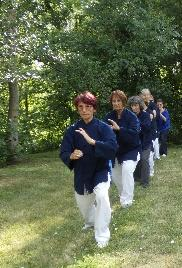

Une pratique partagée
Plus de 40 ans de Taichi Chuan à Niort et en Poitou-Charentes.
Plus de 40 ans à Niort
Toum Porte Océane pratique et transmet le Taichi Chuan depuis plus de 40 ans à Niort, et dans diverses villes et villages de Poitou-Charentes.
L'association est affiliée à la Fédération Française des Arts Énergétiques et Martiaux Chinois (FFAEMC) et soutenue par les municipalités de Niort et de Châtelaillon-Plage.
Année de création, anecdotes et moments marquants : à compléter par l'association.
Nos valeurs
Patience
Le Taichi Chuan est « une école de patience et de découverte de soi » : on progresse à son rythme, avec plaisir.
Ouverture
Une pratique qui apprend à se centrer et à s'ouvrir à l'autre, ouverte à tous les âges.
Transmission
Des enseignantes diplômées d'État ou fédérales, et une pratique fidèle au style Tung.
Le lien avec l'école TOUM
Toum Paris, fondée par Anya Méot en 1983, a donné naissance à plusieurs associations Toum en France et à l'étranger. Toum Porte Océane en fait partie.
Les associations Toum diffusent le style Yang de Maître Tung Kai Ying. Au cours de leurs voyages, les pratiquants Toum peuvent être accueillis pour une soirée de pratique par une autre association Toum.

Les enseignantes
Toutes les enseignantes de Toum Porte Océane ont un diplôme de Taichi Chuan reconnu par l'État.
Le bureau
Composition du bureau : à compléter par l'association.
Envie d'essayer ?
Venez découvrir le Taichi Chuan dans l'un de nos trois lieux. Contactez-nous pour convenir d'une séance.